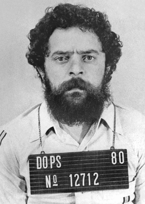
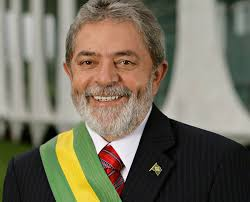
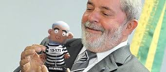

Luiz Inácio Lula da Silva (Caetés, 27 de outubro de 1945), nascido Luiz Inácio da Silva e mais conhecido como Lula, é um político, ex-sindicalista e ex-metalúrgico brasileiro, o 35.º presidente do Brasil entre 2003 e 2011.
 
Nos 31 dias em que ficou preso no DOPS, Lula fez "assembleia" com os investigadores e assistiu a um jogo do Corinthians. Veja outros fatos Revista Exame São Paulo – Para o ex-presidente Luiz Inácio Lula da Silva, os militares devem ter se arrependido de tê-lo prendido durante a ditadura. A minha prisão politizou o movimento, afirmou em depoimento à Comissão da Verdade gravado nesta segunda-feira
